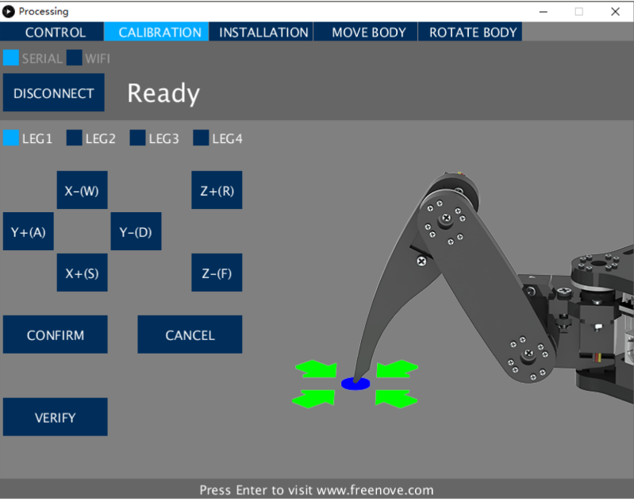
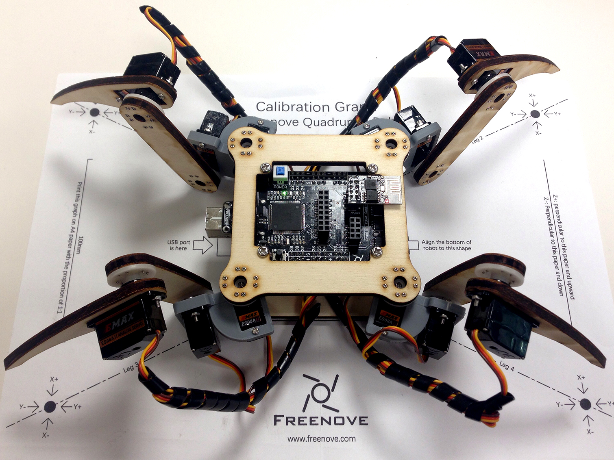
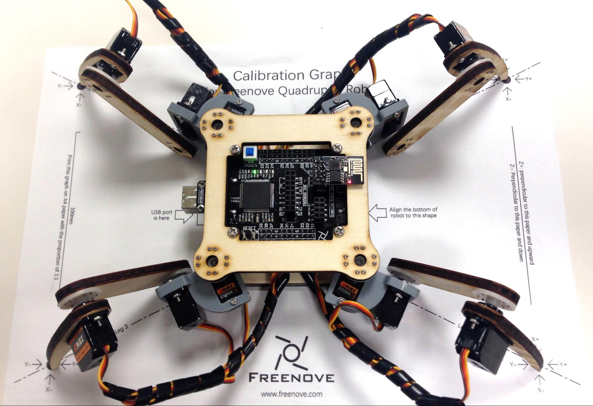
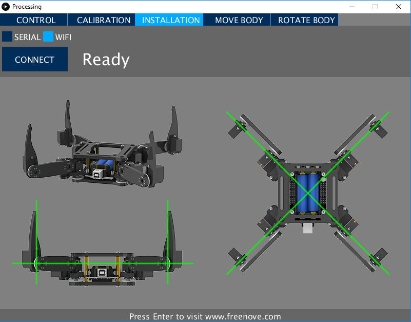

The ESP8266 module that you just installed allows you to communicate in wifi with the robot, first turn it on and then connect your computer to WiFi at the "Freenove Quadruped Robot" access point. The network key is "Freenove".
Launch the Processing application, open the Sketch "Processing" that you installed at the beginning of the tutorial and which can be found in your sketchbook.
Turn on the robot and then click "run" and then click "CONNECT" in the new command interface.
Select the "CALIBRATION" tab, the robot must move to the calibration position with the 4 legs up.
If you do not have the calibration guide, print it on an A4 sheet without changing its scale: the file is named "CalibrationGraph" and is located in the folder you downloaded from the GitHub repository at the very beginning of this tutorial. Place the robot on the calibration guide according to its orientation.
Click on "LEG1" and then use the keys [A], [D], [S], [W], [R], and [F] on your keyboard to position the end of the tab exactly on the corresponding black dot: [A] moves in +Y, [D] in -Y, [S] in + X, [W] in -X, [R] in + Z and [F] in -Z. Repeat for all 4 legs then click "CONFIRM".
If you are unable to calibrate your robot, this means that the legs have not been properly mounted: place the robot on the back and click on "INSTALLATION".
Carefully unscrew the bottom plate and align each of the tabs individually by unscrewing them and turning them one by one according to the diagram above.
After this calibration the robot is now ready to take its first steps!
It can be controlled in three different ways: